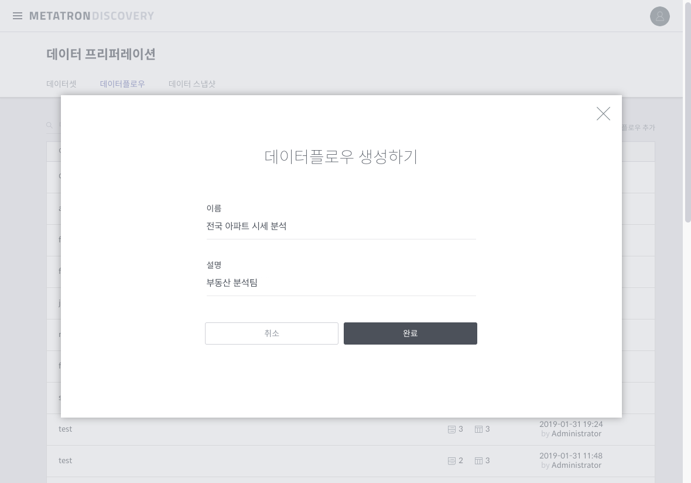

데이터셋 추가하기¶
데이터플로우 정의의 첫 단계는 데이터셋을 추가하는 것입니다. 이를 위해서는 아래와 같은 두 가지 방법이 있습니다.
빈 데이터플로우 생성 후 데이터셋 추가¶
데이터플로우 홈 화면 우측 상단에서 데이터플로우 추가를 클릭합니다.
생성할 데이터플로우의 이름과 설명을 입력하고 완료를 누르면, 빈 데이터플로우가 생성됩니다.
화면 중앙에 위치한 이 데이터플로우에 데이터셋 추가 버튼을 누릅니다.

추가할 데이터셋들을 선택합니다.

선택한 Imported Dataset과 그에 상응하는 Wrangled Dataset이 생성되었으면, 룰 편집 버튼을 눌러 룰 편집을 실시합니다(자세한 절차는 룰 편집 참조)

데이터셋 상세 화면에서 바로 데이터플로우 생성¶
데이터셋 상세 화면에서 이 데이터셋으로 새로운 데이터플로우 생성 버튼을 누르면, 자동으로 데이터플로우를 만들고 룰 편집 직전의 단계까지 진행합니다.

참고
데이터플로우의 이름은 데이터셋 이름을 기반해서 자동으로 지어집니다.